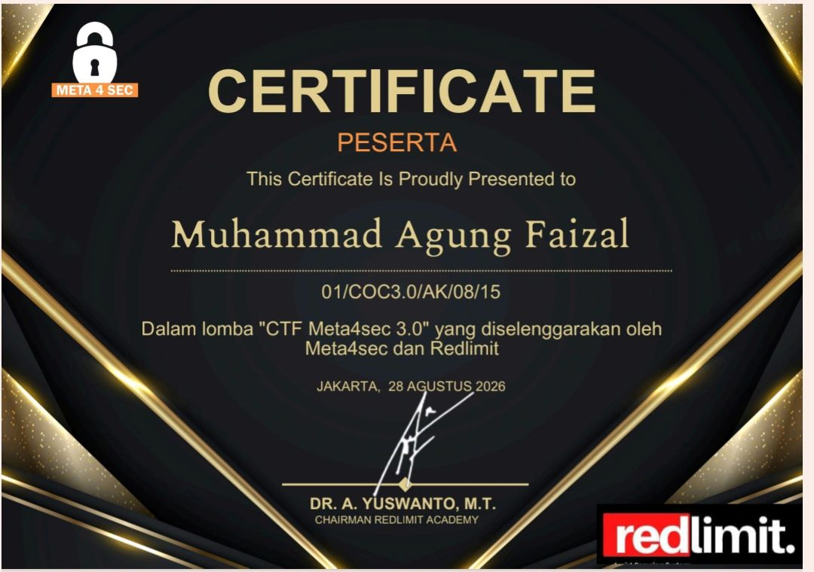

Official Certificate & Credential Verification
Sertifikat verifikasi resmi kepesertaan dalam kompetisi CTF Meta4sec 3.0 yang diselenggarakan oleh Meta4sec dan Redlimit Academy:

Credential ID: 01/COC3.0/AK/08/15 • Issued: 28 Agustus 2026
Competition Overview
CTF Meta4sec 3.0 adalah ajang kompetisi keamanan siber tingkat nasional yang diselenggarakan secara kolaboratif oleh komunitas Meta4sec dan Redlimit Academy. Kompetisi ini menguji ketangkasan peserta dalam mengidentifikasi, menganalisis, dan mengeksploitasi berbagai skenario kerentanan sistem modern.
Pada babak kualifikasi ini, saya berkompetisi sebagai Solo Player (pemain individu) tanpa rekan tim. Menghadapi tim-tim peserta lain yang terdiri dari multi-personel, strategi yang diterapkan menitikberatkan pada kecepatan pemecahan soal fundamental dan pemilihan tantangan bernilai poin optimal di berbagai kategori.
Categories Solved & Technical Scope
Sebagai pemain solo, saya menangani seluruh variasi kategori secara mandiri:
- Web Vulnerabilities: Eksploitasi celah autentikasi, analisis alur logika parameter HTTP, dan manipulasi injeksi input.
- Cryptography: Dekripsi sandi klasik, deobfuskasi skema modular, dan analisis karakter enkripsi.
- Reverse Engineering: Analisis statis biner terkompilasi, ekstraksi string tersembunyi, dan pemetaan logika percabangan eksekusi.
- Steganography: Ekstraksi data tersembunyi (*data carving*) dari payload berkas gambar/multimedia menggunakan analisis metadata dan file header.
- Miscellaneous (Misc): Pemecahan tantangan logika, decoding format data esoterik, dan automasi skrip sederhana.
Tools & Environment
- Linux Environment: Kali Linux.
- Web & Traffic Analysis: Burp Suite, cURL, DevTools.
- Reversing & Decompilation: Ghidra, Strings, GDB.
- Forensics & Stego: Binwalk, Exiftool, Stegsolve, CyberChef.